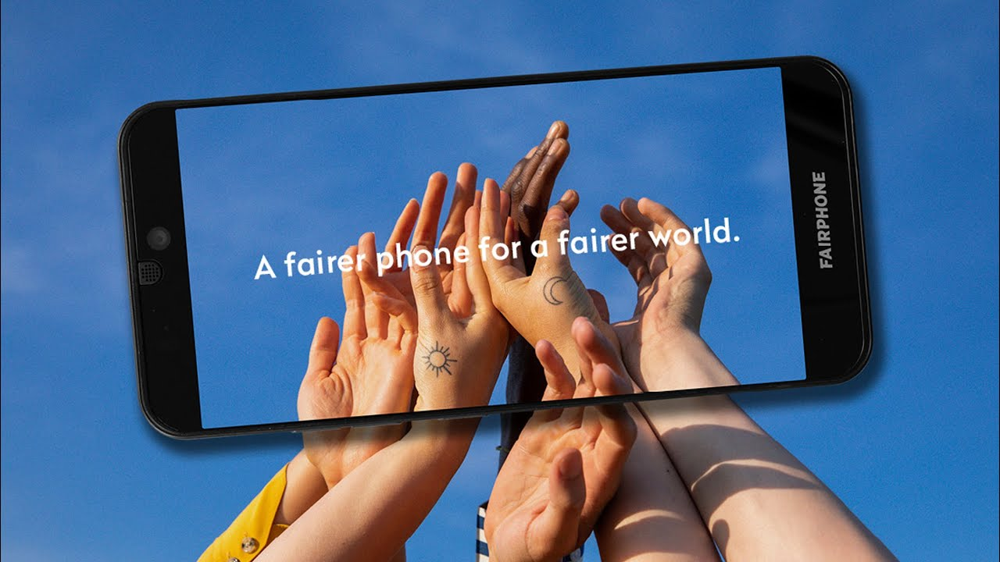
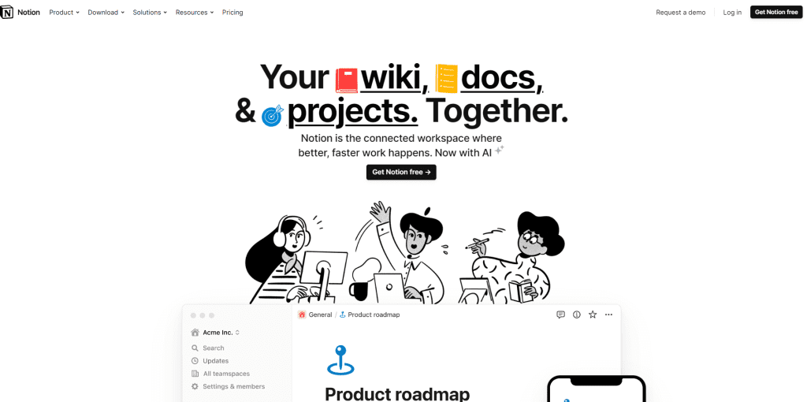
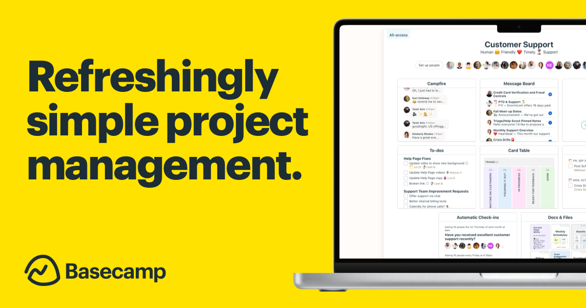
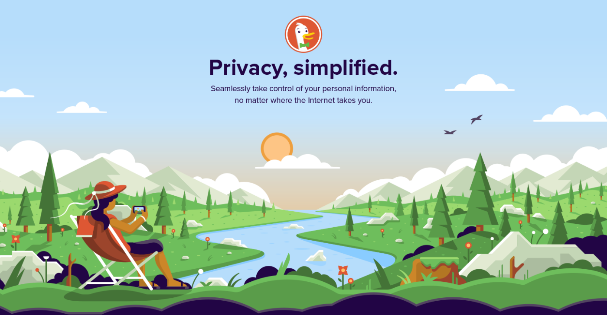
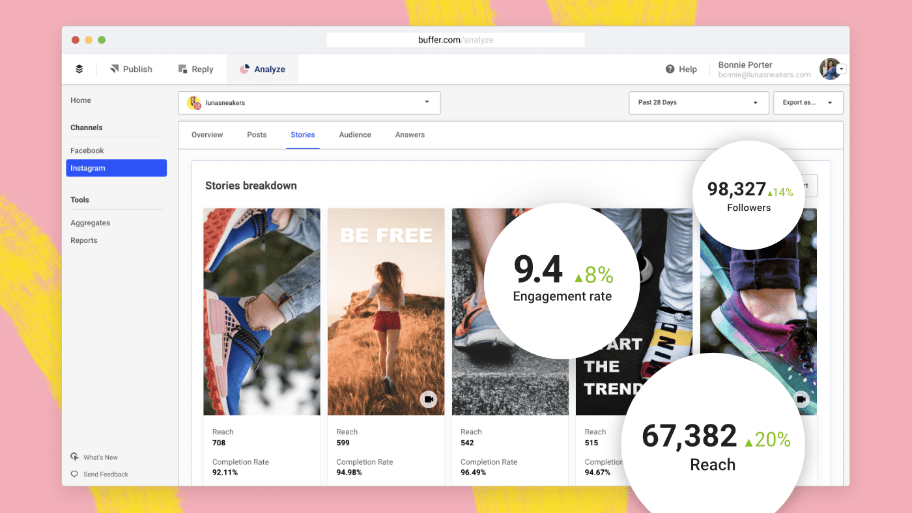

Tech against the grain: 7 tech brands redefining the industry

June 5th 2024
By Emily
While the likes of Tesla and Apple often hog the limelight, a host of smaller tech companies are quietly rewriting the rules with their inventive approaches, unique offerings, and unconventional marketing tactics. These trailblazers are challenging norms and setting fresh benchmarks in their niches.
Let’s dive into the world of these audacious brands redefining the tech landscape.

1. Fairphone: ethical and sustainable smartphones
Fairphone aims to create a more ethical and sustainable smartphone. Unlike the big players, Fairphone prioritises ethical sourcing of materials, fair labour practices, and modular design that champions repairability and longevity. This is a huge contrast to the usual throwaway culture of the tech industry.
Branding strategy
Fairphone’s branding revolves around transparency, ethics, and sustainability. Their visual identity, featuring earthy tones and clean designs, reflects their environmental commitment.
Their storytelling approach takes you on a journey from raw materials to finished products, highlighting fair trade practices and environmental impact. This strategy deeply connects with a niche audience that values social responsibility, positioning Fairphone not just as a phone manufacturer, but as a movement towards a fairer electronics industry.
Practical takeaway
- Lesson: Transparency and ethics can set your brand apart. Be open about your practices and let your values shine through in your branding.
- Action: Audit your supply chain and highlight ethical practices in your marketing materials. Use storytelling to connect with customers on a deeper level.

2. Notion: all-in-one workspace
Notion offers a versatile, all-in-one workspace that merges notes, tasks, databases, and wikis. It stands out by offering extreme customisation, letting users tailor their workspace to fit their exact needs. This flexibility appeals to individuals and teams seeking a personalised productivity tool.
Branding strategy
Notion’s brand revolves around simplicity, flexibility, and user empowerment. Their minimalist design, with clean lines and neutral colours, mirrors their product’s simplicity and customisability.
Their community-driven marketing showcases how users around the world personalise their setups. User-generated content, tutorials, and templates play a crucial role, fostering a sense of community and shared knowledge. This grassroots marketing builds a passionate user base that feels personally connected to the brand.
Practical takeaway
- Lesson: User empowerment and customisation can create a loyal customer base. Engage with your community and leverage user-generated content.
- Action: Encourage your customers to share how they use your product. Feature their stories and tips in your marketing efforts to build a sense of community.

3. Superhuman: the fastest email experience
Superhuman reimagines email with a focus on speed, efficiency, and user experience. Features like AI-powered triage, offline access, and keyboard shortcuts transform email from a cumbersome task into a streamlined process. Their promise? Help users get through their email faster than ever before.
Branding strategy
Superhuman’s brand is all about exclusivity and high performance. Their sleek, modern visual identity, with bold colours and sharp lines, conveys speed and efficiency. They employ a scarcity marketing strategy, using a waitlist system to create a sense of exclusivity and desirability.
They have a highly personalised onboarding process involving one-on-one session to help users get the most out of the product. This premium, tailored experience reinforces the brand’s image as a high-end, must-have tool for busy professionals.
Practical takeaway
- Lesson: Exclusivity can drive demand. Personalised onboarding can enhance user experience and satisfaction.
- Action: Consider implementing a waitlist or invite-only system for new product launches. Offer personalised onboarding or customer support to ensure users get the most out of your product.

4. Basecamp: project management with a human touch
Basecamp offers project management software that emphasises simplicity and ease of use. Unlike feature-bloated competitors, Basecamp focuses on essential tools that help teams communicate and collaborate effectively without overwhelming complexity.
Branding strategy
Basecamp’s brand is refreshingly honest and human-centric. Their visual identity features hand-drawn illustrations and a friendly, approachable colour palette, setting them apart from the often sterile, corporate feel of other project management tools.
Their straightforward, conversational messaging often challenges traditional hustle culture and promotes healthier work practices. Their blog and books, authored by the founders, advocate for sustainable business practices and work-life balance, positioning Basecamp as not just a tool but a thought leader in creating better work environments.
Practical takeaway
- Lesson: Human-centric branding and honest messaging can differentiate your product. Advocating for healthier practices can position your brand as a thought leader.
- Action: Use approachable visuals and straightforward language in your branding. Share your company’s values and practices openly, and advocate for issues that resonate with your audience.

5. DuckDuckGo: privacy-focused search engine
DuckDuckGo differentiates itself from search giants like Google by prioritising user privacy. They don’t track users or store personal information, offering a straightforward search experience without the invasive data collection that dominates the industry.
Branding strategy
DuckDuckGo’s brand focuses heavily on privacy advocacy. Their clean, no-frills design emphasises simplicity and trustworthiness. The iconic duck logo is both playful and memorable, making the brand approachable.
Their marketing strategy includes educating users about online privacy risks and the benefits of a privacy-focused search engine – using blogs, social media, and public speaking engagements to position themselves as leaders in the fight for digital privacy. This transparency and dedication to user privacy resonate strongly with their audience, fostering trust and loyalty.
Practical takeaway
- Lesson: Prioritising and educating about user privacy can build trust and loyalty. Simplicity in design can enhance approachability.
- Action: Clearly communicate how you protect customer data and privacy. Use educational content to inform your audience about relevant issues and position your brand as a trusted advisor.

6. Figma: collaborative design tool
Figma has revolutionised the design industry with a cloud-based tool that enables real-time collaboration. Unlike traditional design software that requires multiple versions and complex file management, Figma allows multiple users to work on the same project simultaneously, making design a more collaborative and efficient process.
Branding strategy
Figma’s brand is all about collaboration and community. Their vibrant visual identity, with colourful palettes and fluid shapes, symbolises creativity and teamwork. Figma’s marketing strategy focuses on community engagement and education.
They host webinars, design challenges, and events to bring designers together and foster a sense of belonging. User stories and case studies highlight how different teams use Figma to streamline their design processes, reinforcing the brand’s value proposition of efficiency and collaboration.
Practical takeaway
- Lesson: Community engagement and real-time collaboration can significantly enhance user experience. Vibrant branding can convey creativity and teamwork.
- Action: Organise community events and create educational content to engage users. Highlight user stories and case studies to showcase your product’s impact.

7. Buffer: social media management with transparency
Buffer provides a social media management platform that helps businesses schedule posts, track performance, and manage multiple accounts from one place. What sets Buffer apart is its commitment to transparency and unique company culture.
Branding strategy
Buffer’s brand is built on transparency and trust. Their clean, modern visual identity, with a friendly colour scheme and straightforward typography, reflects their open and honest approach. Buffer’s marketing strategy centres around radical transparency.
They openly share their revenue numbers, business decisions, and even employee salaries on their blog. This level of openness builds a strong connection with their audience, who appreciate the honesty and feel more invested in the brand. Buffer’s content also includes insights and tips on social media marketing, positioning them as a valuable resource for their users.
Practical takeaway
- Lesson: Transparency can build trust and foster a strong connection with your audience. Openly sharing company practices can differentiate your brand.
- Action: Adopt a transparent approach in your business operations and marketing. Share behind-the-scenes insights and company metrics to build trust with your audience.
Conclusion
These smaller tech companies are redefining their industries by breaking away from traditional norms and offering something truly unique.
Whether it’s through ethical practices, community-driven growth, premium user experiences, or radical transparency, these brands demonstrate that innovation isn’t just about technology—it’s about how you position yourself and connect with your audience.
By going against the grain, they’re carving out niches and inspiring change across the tech landscape.


Interested in working with KOTA?
Drop us a line at
hello@kota.co.uk
We are a Creative Digital Agency based in Clerkenwell London, specialising in Creative Web Design, Web Development, Branding and Digital Marketing.